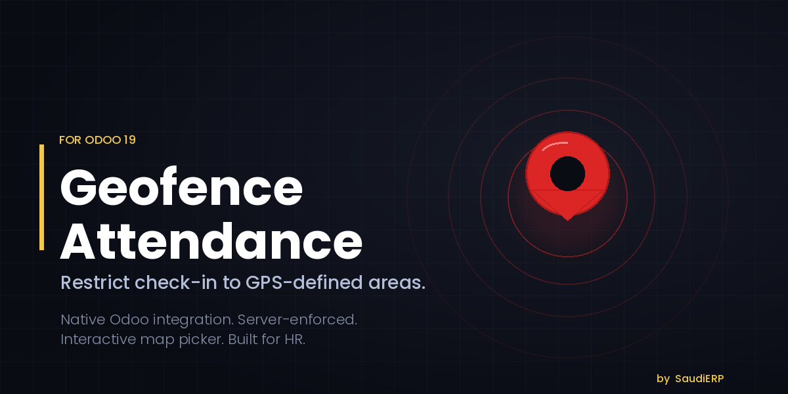
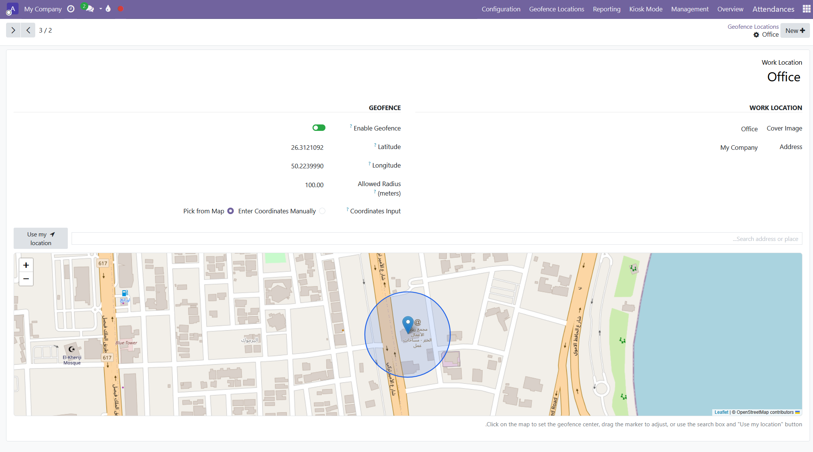
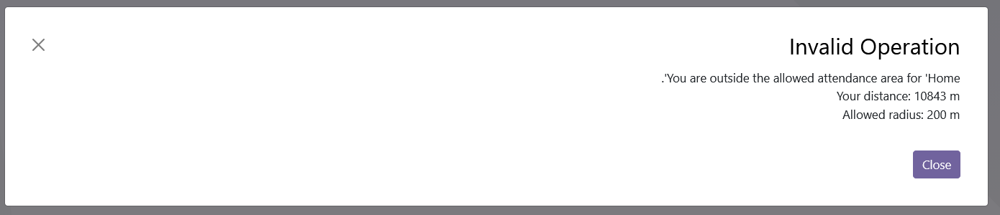
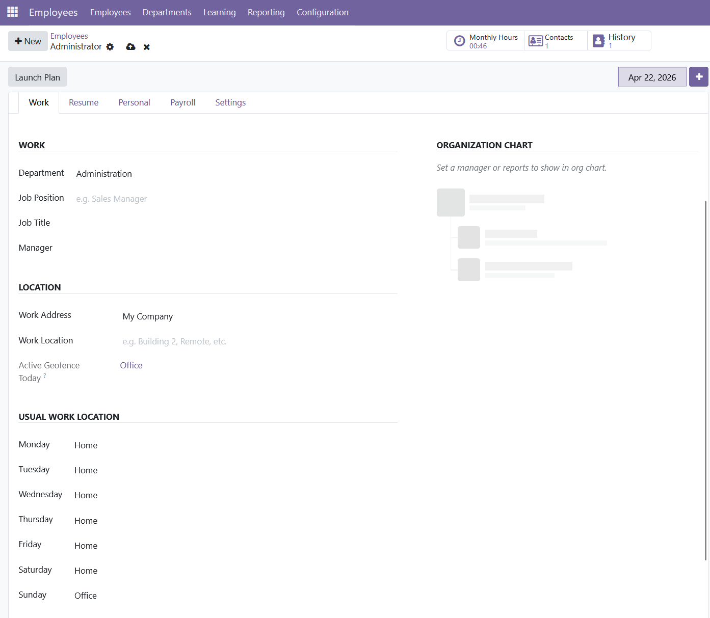
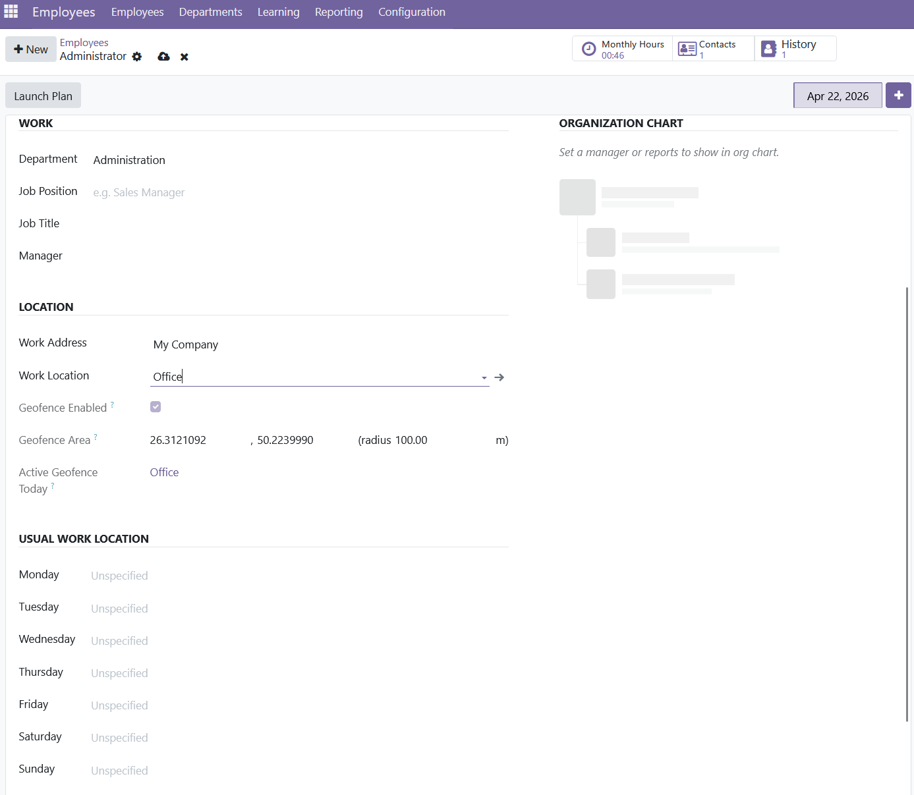

Watch it in action
From setup to enforcement in under two minutes.

by SaudiERP

From setup to enforcement in under two minutes.
Eliminate buddy-punching and remote check-ins from unauthorised locations. With a simple toggle on each work location, you ensure every check-in and check-out happens within an allowed radius of the office, branch, warehouse, or site.
Enable the geofence on each work location, then enter its center coordinates and the allowed radius in meters. Disabled locations fall back to standard Odoo behaviour.
Distance between the employee and the work location is computed using the Haversine formula on the great-circle, ensuring real-world accuracy regardless of latitude.
Choose how to set the geofence center: enter coordinates by hand, or pick a point on an interactive map with built-in address search and a "Use my location" button.
The geofence follows the employee's current work location automatically, with sensible fallbacks built in. Whether you use a single default location, a different place for each day of the week, or date-specific assignments, the right geofence applies on the right day - no extra configuration needed.

1. Set up your geofence visually
Enable the toggle, enter coordinates manually, or click anywhere on the
interactive map to set the center. The blue circle shows the allowed
radius in real time.

2. Out-of-range protection
When an employee tries to check in or out from outside the allowed area,
Odoo blocks the action and shows the exact distance and allowed radius.

3. Smart location resolution
Assign a different work location for each day of the week, or use Odoo's
date-based employee versions for temporary assignments. The geofence
automatically applies the right location, with a clean fallback to the
default work location when no day-specific value is set.

4. Geofence summary on the employee form
See at a glance whether geofencing is enabled for the employee's
work location, the configured area, and which geofence is active today.
Open Attendances - Geofence Locations, enable the toggle, and either enter coordinates manually or pick the center on the map.
On the employee form, set the Work Location field. The geofence summary appears right below it for confirmation.
When the employee tries to check in, Odoo captures the GPS position and the module verifies the distance before accepting the record.
| Feature | Included |
|---|---|
| Per-location geofence toggle | Yes |
| Manual coordinate entry | Yes |
| Interactive map picker with address search | Yes |
| "Use my location" button | Yes |
| Per-day work location resolution | Yes |
| Compatible with Odoo date-based employee versions | Yes |
| Server-side validation (Haversine) | Yes |
| Kiosk Mode support | Yes |
| My Attendance page support | Yes |
| Multi-company aware | Yes |
| Geofence tagging on each attendance record | Yes |
| English and Arabic translations | Yes |
| RTL layout support | Yes |
The map picker relies on the following free, open services. Listed here for full transparency. The core attendance check does not depend on any of them and works fully offline.
| Service | Purpose | Data sent |
|---|---|---|
| Leaflet (unpkg CDN) | Loads the Leaflet JavaScript library and stylesheet that render the map. | None - only file requests. |
| OpenStreetMap tile servers | Serves the map background tiles displayed in the picker. | Map view coordinates and zoom level only. |
| OpenStreetMap Nominatim | Searches addresses entered in the search box. | The text typed in the search box. |
| Deployment | Supported |
|---|---|
| Odoo 19.0 Community | Yes - tested |
| Odoo 19.0 Enterprise | Yes - compatible (no Enterprise-only dependencies) |
| Odoo.sh (Community or Enterprise) | Yes - install via Git repository |
| Odoo Online (SaaS) | No - Odoo Online does not support third-party modules |
hr_attendance moduleFor questions, bug reports, or custom development requests, please reach out to SaudiERP:
Email: support@saudierp.work
Website: saudierp.work